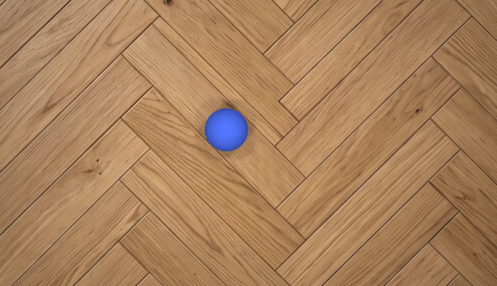

Abstract
Video generators produce convincing motion, but how their internal representations of a physical state relate to their generated dynamics remains unclear. Across five video diffusion transformers, including two video world models, we show that linear probes recover motion-related quantities such as speed, momentum, and gravity from the activations. Several quantities remain decodable even at noise levels where probes applied directly to the model input perform at chance. Using the model's attention to focus the probes on the object of interest improves decoding accuracy, and after recalibration the probes remain predictive when objects and backgrounds change.
However, accurate decoding does not provide reliable control. Interventions along probe directions rarely produce the intended change in motion and can degrade the video, and decoding scores do not predict steering. A preliminary study on one model shows that a direction trained to steer the rolling direction changes it but barely predicts the motion. In the same study, adding a probing term to the training yields a direction that steers the motion and predicts it as accurately as a linear probe. Consequently, decodability and control are separate properties, each to be tested for the use it is meant to serve.
Key Findings
Decodable
Speed, momentum and gravity are linearly decodable from five video DiTs, including two world models, at noise levels where a probe on the model input is at chance. On average, pooling with the model's own attention beats a global probe.
Transferable
After recalibrating only gain and offset, probes stay predictive under new backgrounds, object shapes and object counts, and partly under a new viewpoint.
Decoding ≠ steering
Probe directions rarely turn the generated ball, and decoding scores do not predict which ones do. In a preliminary study, a jointly trained direction both steers and decodes.
Controlled Scenarios with Exact Ground Truth
We render 200 videos per scenario with the Genesis simulator, so every clip comes with exact physical labels. Each video is encoded, forward-diffused to a chosen noise level, and passed once through a frozen DiT while we record every block's activations. We study three general-purpose video generators (Wan 2.1, CogVideoX-1.5, Open-Sora 2.0) and two world models (Cosmos-Predict 2.5, LingBot-World).
Physical Quantities Are Linearly Decodable
Ridge probes predict each simulator quantity across blocks and noise levels. Instead of averaging all tokens, which dilutes the object with background and mixes several objects, we pool each token-frame with the attention sent from the object's tokens in the conditioning frame. Two baselines separate what the DiT adds: a global probe over all tokens, and an input baseline on the noised latent with a random feature expansion.
A probe reading a collision
A collision clip, noised to diffusion timestep 500 of 1000 and passed once through Wan 2.1. Linear probes on the activations read each ball's velocity: dark arrows are the predictions, light arrows the true velocity, and the dots on the chart the predicted speed. The clip is held out from the probes' training.
Wan 2.1, block 31, out-of-fold ridge probes on region-pooled activations from our earlier analysis (not the attention-weighted probe below). One prediction per token-frame (4 video frames); arrows interpolate between them.
How We Probe a Video Model
The five steps from a simulated clip to a probe score.
- Ground truth. A simulated clip whose every frame comes with exact physical labels: velocity, momentum, gravity, angles.
- Encode. The model's own VAE compresses the clip into the latent video z0, in space and in time (about four frames per latent frame).
- Forward noising. The latent is mixed with Gaussian noise to a chosen level. We report it as SNR in dB, from −40 (almost pure noise) to +16 (nearly clean), so levels are comparable across models.
- Capture activations. One forward pass of the frozen DiT, conditioned on the clean first frame and an empty prompt; we record the residual stream at the output of each block. No video is generated.
- Linear probe. Each token-frame is pooled with the attention sent from the object's tokens in the conditioning frame, and a ridge regression maps the pooled activations to the target. We score R² with 5-fold cross-validation split by video.
The model's input already carries some physics: the noised latent zt and the clean conditioning frame zc. We therefore probe that input too, with a random feature expansion so it has as many features as an activation token. The slider sets the noise level.

[zc | zt], the DiT's actual input
Probe R² (n = 200 videos per scenario, 5-fold video-level cross-validation) against input noise, from almost pure noise (−40 dB) to a nearly clean latent (+16 dB). (t) marks a time-varying target, fitted with each token-frame as a sample. Several quantities are decodable from the activations where the input baseline is at chance. Total momentum is the exception to the attention probe's lead: a mean over all tokens already sums over both balls.
Transfer to New Scenes
A probe fitted on one scene is scored on a scene that changes a single factor. A video does not fix the absolute scale of its content, so only a gain and an offset are refitted on ten target videos; the probe direction stays fixed. The inset shows the source scene the probe was fitted on. The ring marks a probe fitted on the target scene itself, the dot the transferred probe.
R² at 0 dB on the target scene (100 videos per variant; recalibrated scores on the 90 not used for the calibration). Each probe is read at the block with the best source-scene score. Open circles mark recalibrated scores below zero, drawn at zero.
Occlusion
Speed and direction stay constant in this rolling scene, so a model that tracks them could still expose them after a cardboard sheet hides the ball. Drag the cardboard from the left edge of the clip over the ball to see the probe scores in the hidden frames.
The clip is video 163 of the 200 occluded rolling videos, one of the fastest; the cardboard motion is the same in all of them and hides the ball from video frame 21 on. Curves: attention-weighted probe R² per token-frame at +16 dB, averaged over speed, direction and position, one probe per token-frame, n = 200, 5-fold video-level cross-validation. They are scores over all 200 videos, not predictions for this clip. The best block per model is the one of the 10 report blocks with the highest R² averaged over the hidden frames, so it is selected on the window it is scored on (Wan block 4, CogVideoX 8, Open-Sora 11, Cosmos 18, LingBot 4). Most blocks fall to chance once the ball is hidden; mid-depth Cosmos-Predict 2.5 blocks are the exception, and only at low noise (best of its 10 blocks: R² 0.51 at +8 dB, 0.23 at 0 dB).
One Direction, Two Jobs: Steering vs Readout
A direction can be trained to steer the ball, fitted to read its motion, or trained to do both. The slider runs from the steering-only direction through the joint direction to the ridge probe. The dashed outline is where the direction's linear readout predicts the ball will end.
(30 test seeds)
(illustrative)
Wan 2.1, block 21. The images are generations steered by the steering-only, joint and ridge-probe directions at the left end, middle and right end of the slider; positions in between blend the two nearest. Dots in the chart are measured turned & intact rates over 30 test seeds (83%, 87%, 17%). The dashed curves between them, the outlines and the readout-outline rate are illustrative.
Probe, Steering-Only and Joint Directions
A preliminary study on Wan 2.1, block 21, injecting in the first five sampling steps. Three directions are compared: a ridge probe fitted on generated clips to read the ball's velocity, a direction trained with a differentiable tracker to steer it, and a joint direction trained to do both.
Rates are over 30 held-out test seeds; five of them are shown. A seed counts as intact when the floor changes by at most 8% of the intensity range. Readout on the same 30 clips (R² against the tracked horizontal velocity): ridge probe 0.17, joint 0.17, steering only 0.006.